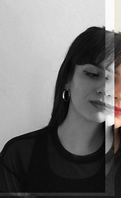

EM
Soy diseñadora UX/UI y me apasiona la comunicación visual.
Enfrentarme a nuevos retos y estar en continuo aprendizaje, me ha llevado a iniciarme en el sector tecnológico.
He trabajado en el sector de moda, dedicándome a la presentación de producto en tiendas Flagship de marcas como Nike o Desigual. Las funciones que he realizado me han situado en el punto medio entre los intereses de los usuarios, y el rendimiento de la actividad. También estudie estilismo de Moda, y he trabajado en diferentes campañas en las que he aprendido a proyectar valores de marca a través de la indumentaria. posteriormente estudié Diseño gráfico para ampliar mis conocimientos y poder comunicar gráficamente conceptos mediante sistemas de diseño. Especializarme en diseño UX/UI de productos digitales me da la posibilidad de poder ayudar a los usuarios a resolver sus problemas. Disfruto pudiendo trasladar mi experiencia laboral del mundo físico al digital.
Enfrentarme a nuevos retos y estar en continuo aprendizaje, me ha llevado a iniciarme en el sector tecnológico.
He trabajado en el sector de moda, dedicándome a la presentación de producto en tiendas Flagship de marcas como Nike o Desigual. Las funciones que he realizado me han situado en el punto medio entre los intereses de los usuarios, y el rendimiento de la actividad. También estudie estilismo de Moda, y he trabajado en diferentes campañas en las que he aprendido a proyectar valores de marca a través de la indumentaria. posteriormente estudié Diseño gráfico para ampliar mis conocimientos y poder comunicar gráficamente conceptos mediante sistemas de diseño. Especializarme en diseño UX/UI de productos digitales me da la posibilidad de poder ayudar a los usuarios a resolver sus problemas. Disfruto pudiendo trasladar mi experiencia laboral del mundo físico al digital.
